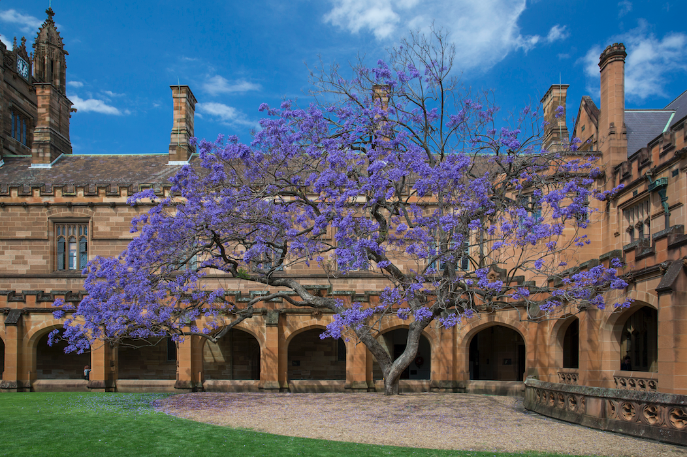

Ian Lizarraga

Coordinates:
489 Carslaw Building
School of Mathematics and Statistics
University of Sydney
Email: ian.lizarraga 'at' sydney 'dot' edu 'dot' au
Welcome! I'm a postdoctoral fellow working with Robby Marangell and Martin Wechselberger at the University of Sydney. I work on multiple-timescale dynamical systems.
I was a PhD student at Cornell University, advised by John Guckenheimer and Steven Strogatz.
My citation count (and other statistics) can be viewed on my ResearchGate profile.
Education and Work
2018 - 2023: Postdoctoral Fellow in Dynamical Systems, University of Sydney2017 - 2018: Visiting Assistant Professor, Cornell Math Department
2011 - 2017: PhD, Applied Mathematics, Cornell University
2008 - 2011: BA, Physics with Honors, Mathematics, Northwestern University
Publications and preprints
-
T. Kaper, I.M.L., R. Marangell, and T. Vo
Geometric construction of trigger waves in reaction-diffusion systems
In progress.
I.M.L. and M. Wechselberger
Delayed and singular Hopf bifurcations in nonstandard slow-fast systems
In prep.
I.M.L. and R. Marangell
Nonlinear stability of shock-fronted travelling waves under nonlocal regularization
Submitted (2022), 26 pages. [arXiv]
I.M.L. and R. Marangell
Slow eigenvalue problems and the spectral stability of shock-fronted travelling waves under viscous relaxation
Submitted (2022), 70 pages. [arXiv]
Bronwyn Bradshaw-Hajek, I.M.L., R. Marangell, and M. Wechselberger
A geometric singular perturbation analysis of regularised reaction-nonlinear diffusion models including shocks
Proceedings of 47th Sapporo Symposium on Partial Differential Equations (2022), pp. 53--64. I.M.L., B. Rink, and M. Wechselberger
Multiple timescales and the parametrisation method in geometric singular perturbation theory
Nonlinearity 34 4163 (2021). [arXiv]
I.M.L., R. Marangell, and M. Wechselberger
Slow unfoldings of contact singularities in singularly perturbed systems beyond the standard form
J Nonlinear Sci 30, 3161--3198 (2020). [arXiv]
I.M.L. and M. Wechselberger
Computational singular perturbation method for nonstandard slow-fast systems
SIADS 19(2), 994–1028 (2020). [arXiv]
I.M.L.
Tangency bifurcation of invariant manifolds in a slow-fast system
Chaos (accepted pending minor revisions). [Preprint]. J. Guckenheimer and I.M.L.
Shilnikov homoclinic bifurcation of mixed-mode oscillations
SIADS 14(2), 764-786 (2015) [arXiv] I.M. Kloumann, I.M.L., and S.H. Strogatz
Phase diagram for the Kuramoto model with van Hemmen interactions
Physical Review E 89, 012904 (2014) [arXiv] J. Teyssandier, S. Naoz, I.M.L., and F. Rasio
Extreme orbital evolution from hierarchical secular coupling of two giant planets
ApJ 779 166 (2013) [arXiv]
Talks
2023 May: SIAM Conference on Dynamical Systems, Portland, Oregon, USA2022 Nov: Sydney Dynamics Group Workshop, New Zealand
2022 Aug: SIAM Conference on Nonlinear Waves and Coherent Structures, Germany
2022 Apr: Dynamics Seminar, Boston University
2021 May: SIAM Conference on Dynamical Systems, Online
2021 May: Applied Maths Seminar, UNSW, Australia
2020 Dec: AustMS, Dynamical systems special session
2020 Mar: VIC-ANZIAM Lecture, University of Melbourne, Australia
2020 Mar: Applied Maths Seminar, Monash University, Melbourne, Australia
2020 Feb: ANZIAM, Hunter Valley, Australia
2019 Dec: Applied Maths Seminar, University of New South Wales, Sydney, Australia
2019 Nov: Sydney Dynamics Group Workshop, Margaret River, Australia
2019 Jul: Equadiff, Universiteit Leiden, Netherlands
2019 Jul: Slow-Fast-Ival Workshop, University of Edinburgh, UK
2019 May: SIAM Conference on Dynamical Systems, Snowbird, UT, USA
2019 Feb: ANZIAM, Nelson, New Zealand
2018 Nov: Sydney Dynamics Group Workshop, Blackheath, Australia
2018 Oct: Sydney Dynamics Group Seminar, Sydney, Australia
2017 Aug: Cornell Applied Math Seminar, Ithaca, NY, USA
2015 May: SIAM Conference on Dynamical Systems, Snowbird, UT, USA
2015 Mar: Cornell Dynamical Systems Seminar, Ithaca, NY, USA
2014 July: SIAM Annual Meeting, Chicago, IL, USA
2013 Nov: Cornell Scientific Computing and Numerics Seminar, Ithaca, NY, USA
Refereeing
I have served as a referee for the following journals:-
Nonlinearity
CHAOS
Physica D
DCDS-B
SIADS
Teaching
-
21Sem2, Math 3888: Projects in Mathematics (Instructor, 50 students, USyd)
20Sem2, Math 3888: Projects in Mathematics (Project Supervisor, 50 students, USyd)
20Sem1, Math 3063: Differential Equations with Applications to Biology (Instructor, 120 Students, USyd)
19Sem1, Math 3063: Differential Equations with Applications to Biology (Instructor, 120 Students, USyd)
18Sp, Math 1110: Calculus I (Instructor, 60 students, Cornell)
17Fa, Math 1120: Calculus II (Instructor, 60 students, Cornell)
17Sp, Math 2210: Multivariable Calculus (TA, Cornell)
16Fa, Math 2940: Linear Algebra for Engineers (Head TA, Cornell)
16Su, Math 1110: Calculus I (TA, Cornell)
16Sp, Math 1106: Calculus for the Life and Social Sciences (TA, Cornell)
15Fa, Math 2210: Linear Algebra (TA, Cornell)
15Sp, Math 2940: Linear Algebra for Engineers (TA, Cornell)
14Fa, Math 4200: Differential Equations and Dynamical Systems (TA, Cornell)
13Sp, MAE 5730: Nonlinear Dynamics and Chaos (TA, Cornell)
12Fa, Math 1910: Single-Variable Calculus for Engineers (TA, Cornell)